| Test 2: Build a Lego(tm) hemispherical shell | Score: 0.00 / 1 | ||
|---|---|---|---|
Typical Prompt: You have an unlimited number of Lego(tm) bricks, each of individual size 31.8mm * 15.8mm * 11.4mm but when assembled they are 32mm * 16mm * 9.6mm due to interlocking studs and voids. Each brick has 8 studs, in a 2x4 layout. These bricks snap together. For example: A brick at (centroid=[0, 0, 4.8],r=90) is resting on the ground centred over the origin, and a second brick at (centroid=[0, 0, 14.4],r=180) is clicked into the first brick with 4 interlocked studs (out of 8). A third brick at (centroid=[24, 0, 24],r=0) is snapped into 2 studs of the second brick, forming a 75% overhang. Were that third brick at [22,0,24] instead, its shell would intersect 2 studs of the Lego brick below it, and thus not be buildable. Assemble the bricks such that they resemble a 3D hemispherical shell, with inner radius 4 cm and outer radius 7 cm, the centre of the hemisphere is at the origin (0,0,0). Since it's impossible to create a perfect curve, the best score is one which is closer to the ideal curve, with scoring being calculated based on the volume difference between the ideal curve and the actual brick structure. The structure needs to be buildable in 3D, so bricks can not overlap or be floating in mid air. A great answer does not contain any holes or missing bricks. Blocks are being placed directly on a flat surface, i.e. without a base plate, so those resting on the ground can have any orientation and are not confined to a specific grid structure. Connected blocks must follow legal Lego(tm) connection rules and must not fall over when built. (Two unstable structures leaning on each other will push each other apart and fall over) Return a list of the bricks. (location in xyz mm relative to the origin and rotation in degrees). |
Prompt Changes: Inner and outer radius parameters increase progressively across subpasses |
||
| Subpass 0 Parameters: 4cm inner, 7cm outer. ~120 bricks View exact prompt View raw AI output View chain of thought Lego bricks look like they'd benefit from voxelization, but they really don't. So most reasoning models try to voxelise the problem in Python, and then struggle to convert that back to Lego bricks. They end up losing points for overlapping bricks or bricks entirely underground or outside of the hemispheres. |
0.0000 | N/A (LLM did not answer) | N/A (Test forfeited) |
| Test 3: CSG Union of Polyhedra | Score: 0.00 / 1 | ||
Typical Prompt: You can output polyhedrons in a json format. For example here is a simple cube, every face has 4 vertices, and there are 6 faces: ``` json { "polyhedron": { "vertex":[{"xyz":[-1.0,-1.0,-1.0]},{"xyz":[1.0,-1.0,-1.0]},{"xyz":[1.0,1.0,-1.0]},{"xyz":[-1.0,1.0,-1.0]},{"xyz":[-1.0,-1.0,1.0]},{"xyz":[1.0,-1.0,1.0]},{"xyz":[1.0,1.0,1.0]},{"xyz":[-1.0,1.0,1.0]}], "faces":[{"vertex":[3,2,1,0]},{"vertex":[4,5,6,7]},{"vertex":[0,1,5,4]},{"vertex":[7,6,2,3]},{"vertex":[3,0,4,7]},{"vertex":[1,2,6,5]}] } } ``` Now you've learnt the format, use it to solve the following problem: You are given two solid cubes, each with side length 10cm. The first cube is centered at the origin (0, 0, 0). The second cube is centered at (8, 0, 0) Return a polyhedron that is the union of all the solid objects described above. - Ensure faces have normals encoded in a consistent direction (outward-facing). - Ensure no geometry occurs inside the polyhedron, and no faces cross through it. - Note that some faces may have more than 4 vertices. - Your output should have no degenerate faces or redundant vertices. - The task is a failure if the output is not watertight. |
Prompt Changes: Various CSG union problems with different shape combinations. |
||
| Subpass 1 Parameters: Two cubes overlapping at corner View exact prompt View raw AI output View chain of thought |
0.0000 | N/A (LLM did not answer) | N/A (Test forfeited) |
| Test 4: Tetrahedron Shadow Coverage | Score: 0.00 / 1 | ||
Typical Prompt: Here is the points and faces of a regular tetrahedron with all sides equal 1, resting on the Z=0 plane and with an edge along the X=0 plane: polyhedron( points = [ [0, 0, 0], // 0 [1, 0, 0], // 1 [0.5, sqrt(3)/2, 0], // 2 [0.5, sqrt(3)/6, sqrt(2/3)] // 3 (apex) ], faces = [ [0, 2, 1], // base (oriented outward) [0, 1, 3], [1, 2, 3], [2, 0, 3] ], convexity = 4 ); We define a 7-part rigid transform of (x,y,z,q0,q1,q2,q3), where q0,q1,q2,q3 is a normalised quaternion, and x, y, z are the translation. Rotation is defined around the 0,0,0 point (Which is NOT THE CENTRE), and is performed before translation. We create a scene with multiple tetrahedra, each with a different transform. Return the transforms of such a scene such that a shadow projected vertically (onto the Z=0 plane) fully covers a square of side length 4, centered at the origin. Use as many tetrahedra as you need, scoring is based on shadow coverage, not the number of tetrahedra used. Score will be deducted for: - any shadow outside of the shape - redundant tetrahedra - non-normalised quaternions - intersection tetrahedra |
Prompt Changes: Prompt parameters change between subpasses (increasing difficulty) |
||
| Subpass 2 Parameters: Cover a square of side length 6, with a hole in the centre of side length 2. View exact prompt View raw AI output View chain of thought |
0.0000 | N/A (LLM did not answer) | N/A (Test forfeited) |
| Test 6: Voxel Grid Projection - shadow coverage and no symmetries | Score: 0.00 / 1 | ||
Typical Prompt: Position 50 voxels in a cubic grid of 6 voxels per side, such that the orthographic projection to all 3 planes is solid (no holes in the projection), and there are no trivial symmetries (rotations or reflections that leave the shape unchanged). 0,0,0 is the bottom left grid cell and indices increase up and to the right. |
Prompt Changes: Progressively larger grids with more voxels across subpasses |
||
| Subpass 1 Parameters: Cover a 8x8x8 grid with 100 voxels View exact prompt View raw AI output View chain of thought |
0.0000 | N/A (LLM did not answer) | N/A (Test forfeited) |
| Test 7: 3D maze - solution requires jumping over gaps | Score: 0.00 / 1 | ||
Typical Prompt: Here is a heightmap platform maze, in which A is located at height 5, and B is located at height 0. The maze represents a 3D space where movement is constrained by height differences. Characters can only move to adjacent cells if the height difference is at most 1, or jump over gaps. A555 2B20 3015 4555 The character can move: - 1 cell horizontally or vertically, so long as the height is within 1 unit. - Can jump 2 cells horizontally or vertically, so long as: - source and destination heights are the same - the height of the cell between the source and destination is lower than the source height (jump over gaps, not through walls!) In this case, the character: - starts at A, which is at level 5 - walks flat for a bit, - jumps over a gap of height 0 to another level 5 block. - walks flat for a bit - descends until level 2, then jumps over B to level 2, - and then continues down to level 0, reaching B. The maze must use only 0-9, A & B to represent height, and must only have one solution. A & B must appear in the grid once each. The path must visit at least 20% of all cells. No single elevation can occupy more than 30% of the grid. Create a maze of size 5x5 that has A at level 5 and B at level 0, and at least 2 jumps. Your output must be ONLY the maze's heightmap, nothing else. Your output must be 5 rows long, and every row must be 5 characters long. The maze must be your only output - Extra text above or below the maze itself corrupt your work. |
Prompt Changes: Prompt parameters change between subpasses (increasing difficulty) |
||
| Subpass 1 Parameters: Cover a 10x10 grid with A at level 0 and B at level 9, requiring at least 4 jumps View exact prompt View raw AI output View chain of thought |
0.0000 Maze must have exactly one A and one B |
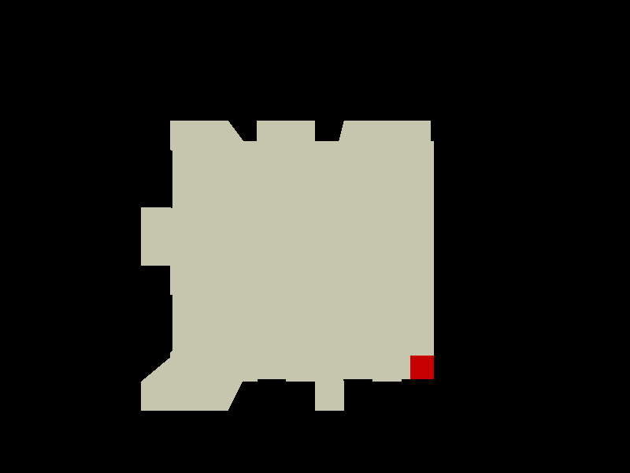 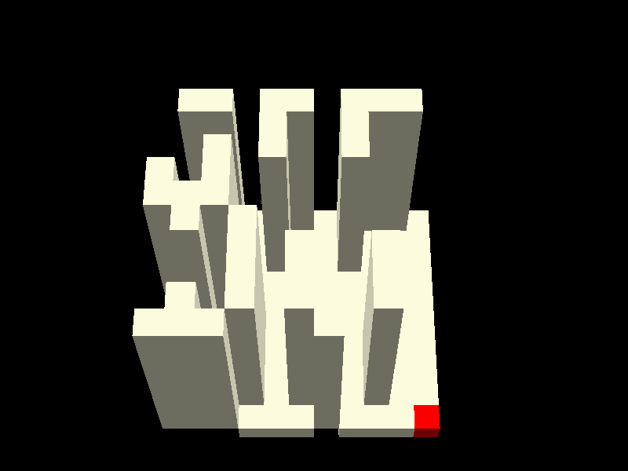 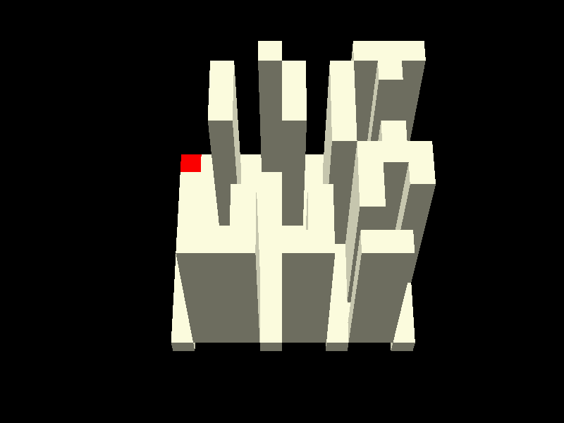 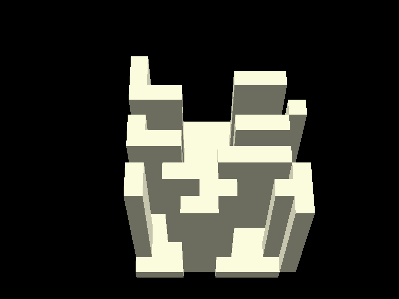 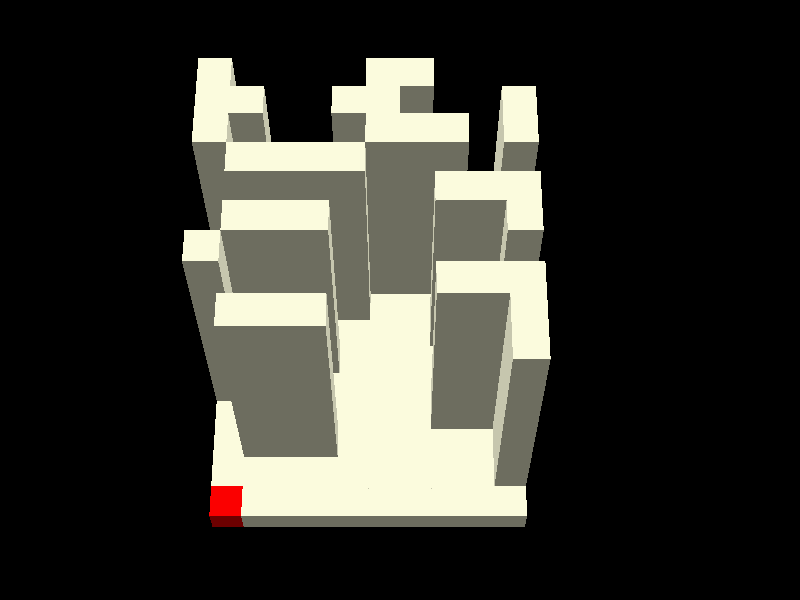 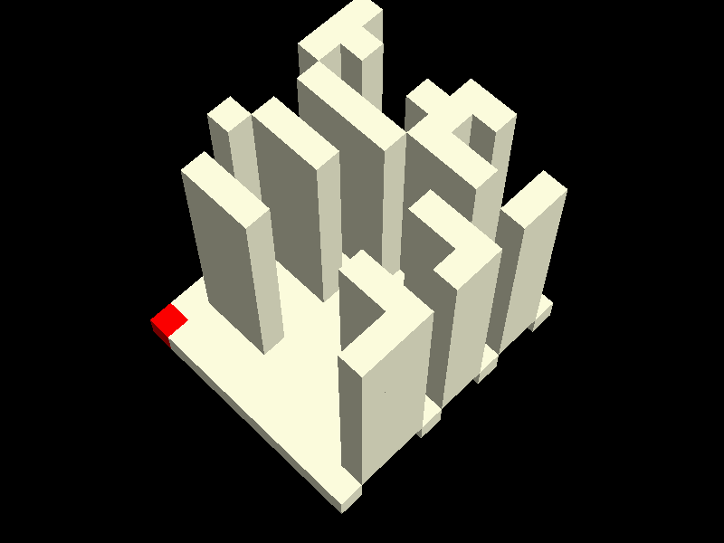 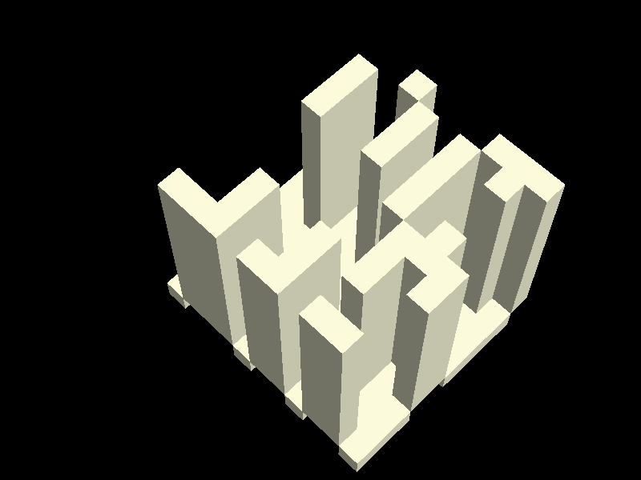 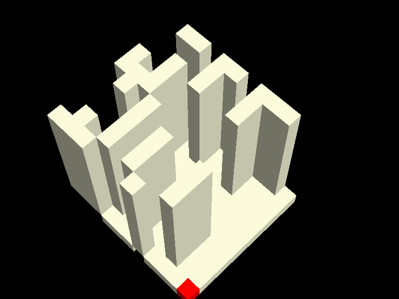 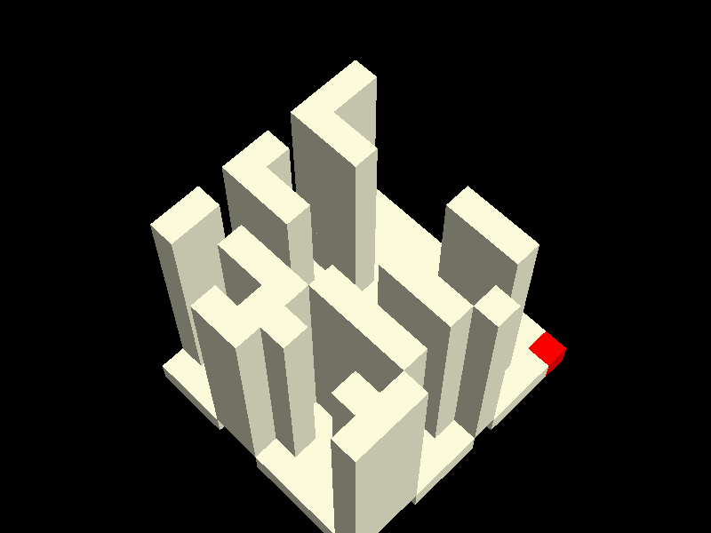 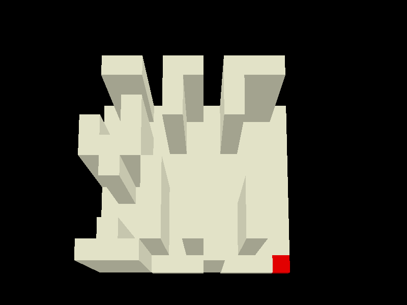 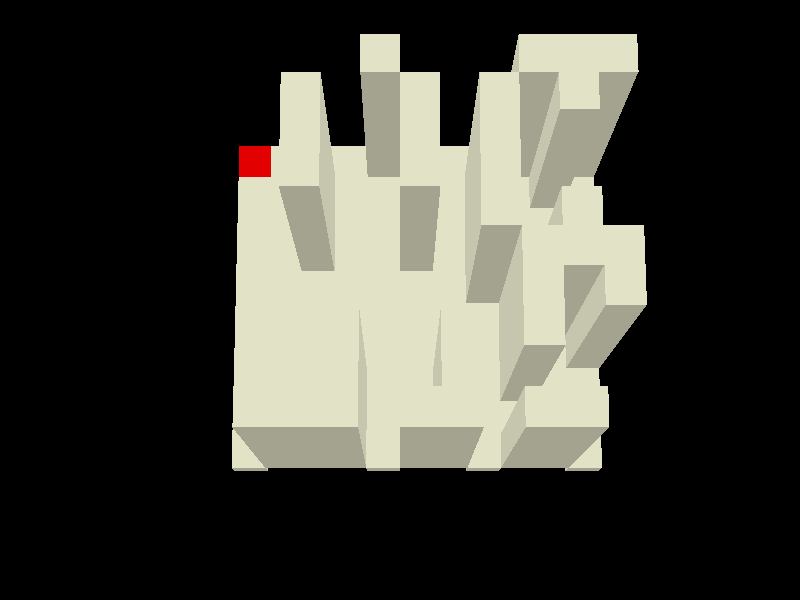 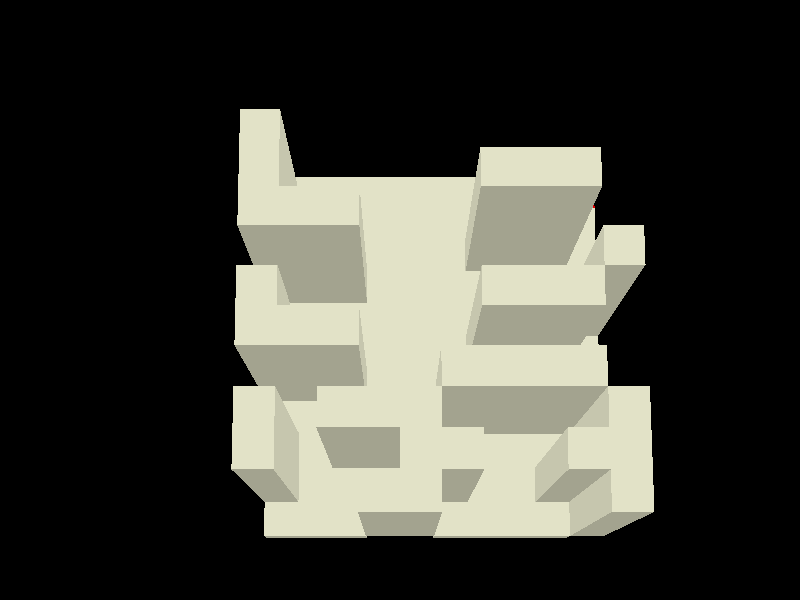 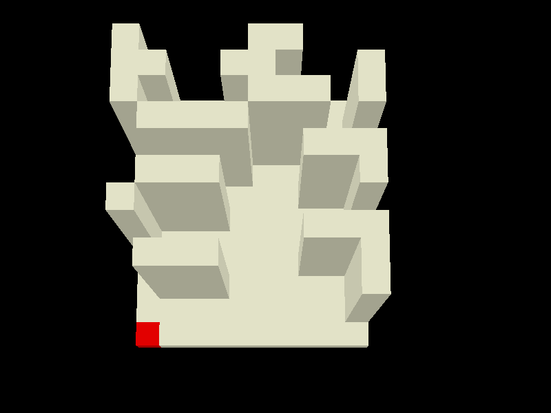 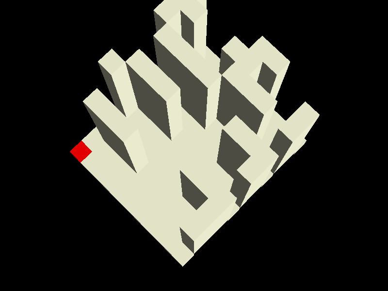 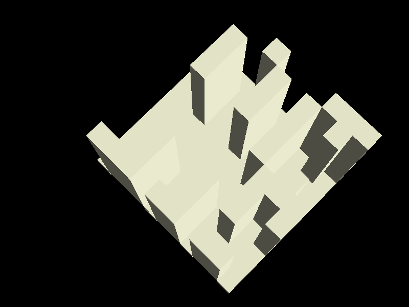 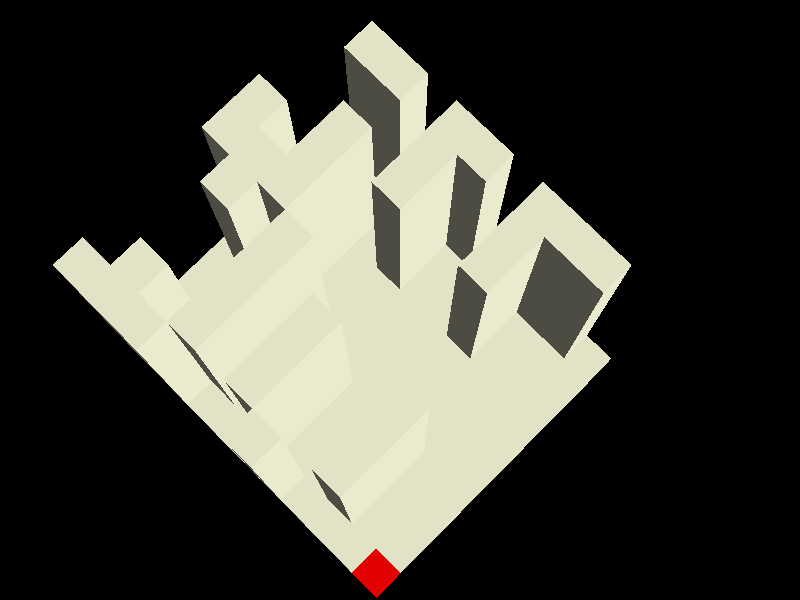 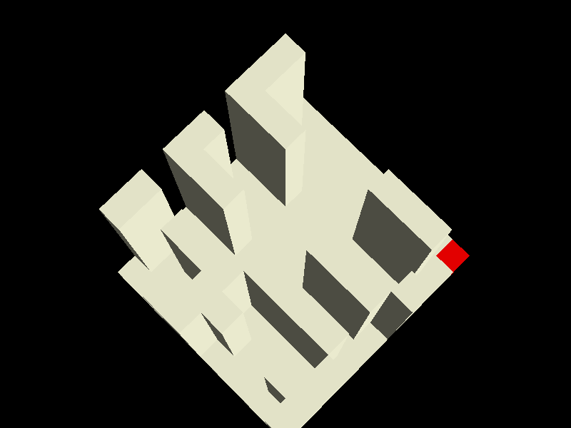 |
|
| Test 8: Fit a curve to partition 2D ascii patterns via cubic polynomials | Score: 0.00 / 1 | ||
Typical Prompt: Here is an 8x8 grid representing a space partition: ........ ........ ..####.. ..#####. .######. ..###### ..#####. ...####. 0, 0 is the top left, x is horizontal, y is vertical. Coordinates are in integers. Using the formula: let cell = '#' if f(x,y) > 0 '.' if f(x,y) <= 0 where f(x,y) is a polynomial of whatever degree you need to solve this. You can include cross terms like x*y, x**2*y, x*y**2, etc. Return the formula as Python function f(x,y) that uses ONLY: - arithmetic operations (+, -, *, /) - powers (**) - parentheses for grouping - integer coordinates x, y - the words "def" and "return" Do not use type annotations, casts, conditionals, branches, additional variables, comments or anything else. You can use the following example as a template: def f(x, y): return x**2 + 3*y**2 - 4*x*y - 145 |
Prompt Changes: Prompt parameters change between subpasses (increasing difficulty) |
||
| Subpass 0 Parameters: Small blob cluster (8x8) ........ ........ ..####.. ..#####. .######. ..###### ..#####. ...####. View exact prompt View raw AI output View chain of thought Can the LLM roundtrip a 2D shape through a polynomial? Shapes are procedurally generated from smooth fields so each subpass features curves/blobs rather than hardcoded patterns. Larger grids (over 64x64) are visualized via attached black/white images instead of ASCII art. |
0.0000 | N/A (LLM did not answer) | N/A (Test forfeited) |
| Test 9: Hamiltonian Loop on Grid | Score: 0.00 / 1 | ||
Typical Prompt: You have a 4*4 grid of unit squares, with cell coordinates (x, y) where 1 <= x <= 4, 1 <= y <= 4. Draw a single closed path that: - Moves from cell to cell using only side-adjacent moves. - Visits every cell exactly once. - Returns to its starting cell (so the path is a loop). - The last cell in your list must be side-adjacent to the first. Answer format: Give an ordered list of the 16 cell coordinates for the loop, starting anywhere, for example: 1,1 1,2 1,3 ... 2,1 |
Prompt Changes: Grid size increases across subpasses, with a missing chunk in the final subpasses |
||
| Subpass 5 Parameters: 16x16 grid with cells (3,3) and (3,4) removed ................ ................ ..X............. ..X............. ................ ................ ................ ................ ................ ................ ................ ................ ................ ................ ................ ................ View exact prompt View raw AI output View chain of thought |
0.0000 | N/A (LLM did not answer) | N/A (Test forfeited) |
| Test 11: Hyper-snake Challenge | Score: 0.00 / 1 | ||
Typical Prompt: Do you remember the snake game, where you have to direct a snake around a 2D space to avoid hitting itself? This is hyper-snake! You are a snake in a 2D space grid of size [8, 8]. You can move to any adjacent cell in the grid, along any of the available 2 dimensions, but you can not move to a cell which you have visited before, nor can you move "diagonally", that is, you can not move in more than one dimension at a time. The game ends when you run out of space to move, when you hit the boundary, or when you run into yourself. You also need to collect the food at: [[1, 1]]. Return the path of the snake as a list of cells, the first element of which is [0, 0] (where you must start), and going for as long as you can. |
Prompt Changes: Dimensions increase from 3D to 10D |
||
| Subpass 4 Parameters: 4D snake in [5, 5, 5, 5] grid. with [(0, 0, 0, 1), (0, 0, 1, 0), (0, 1, 0, 0)] walls. with [(0, 0, 0, 0)] food. View exact prompt View raw AI output View chain of thought |
0.0000 | N/A (LLM did not answer) | N/A (Test forfeited) |
| Test 12: Fit a loop into a square that's perimeter is smaller than the total length | Score: 0.00 / 1 | ||
Typical Prompt: You have 3 1m lengths of pipe, and a square area of side length 1 to play with. Lay the pipe out to form a closed loop, using all the pipe, and returning to the starting point. You can not re-use vertices, and you can not cross the boundary of the area. You do not need to stick to axis aligned paths. Return the loop as a list of the pipe endpoints. Note that N pipes requires N+1 verticies to describe a path, but since the first and last vertices are the same, you only need to return N points. The loop must not cross itself or touch itself. |
Prompt Changes: Increasing pipe length, square size, and complications. |
||
| Subpass 7 Parameters: 18 pipes in 4x4 View exact prompt View raw AI output View chain of thought |
0.0000 | N/A (LLM did not answer) | N/A (Test forfeited) |
| Test 13: Hide and seek behind a building | Score: 0.00 / 1 | ||
Typical Prompt: You have a building at the origin, axis aligned, 2 meters wide and deep, and 10 meters tall. A sniper is located at (100,100,20) and is looking at the building. Position a crowd of 4 people (represented by a 0.5*0.5*2m axis aligned bounding box resting on the z=0 plane) in such a way that: - the sniper can not see any of them due to the building blocking their line of sight. - the people must be positioned entirely on the ground (z=0). - the people must not overlap with the building or each other. - nobody is more than 30 meters away from the building's center. |
Prompt Changes: Varying crowd size and building dimensions |
||
| Subpass 4 Parameters: 150 people, 10m building View exact prompt View raw AI output View chain of thought |
0.0000 | N/A (LLM did not answer) | N/A (Test forfeited) |
| Test 16: Pack rectangular prisms | Score: 0.00 / 1 | ||
Typical Prompt: You are given the following rectangular prisms: 7 prisms of 5x3x2 and have to pack them as efficiently as possible into the smallest volume possible. You can rotate the prisms orthogonally. Return a list of min/max xyz coordinates, one per box that you've successfully packed. A perfect answer is one in which the volume of the enclosing bounding box is the same as the sum of the volumes of the prisms. Every bit of unused space is a point of failure, effort should be taken to elimiate unused space. |
Prompt Changes: Adds additional prisms for each run |
||
| Subpass 1 Parameters: 7 prisms of 5x3x2 11 prisms of 7x5x3 View exact prompt View raw AI output View chain of thought |
0.0000 | N/A (LLM did not answer) | N/A (Test forfeited) |
| Test 23: Fluid simulation | Score: 0.00 / 1 | ||
Typical Prompt: You are given a 3D voxel world, of dimensions 16 * 16 * 8 voxels, currently filled with rock uniformly flat and solid at the layers z = [0,1,2] Rainfall occurs at the top centre of the world, and follows the following rules: - If air is below water, the water falls (z = z - 1) - If water has ground or water below it, it "flood fills" out looking for any air voxels at the z level below it, and moves to the nearest one. - If water touches the sides or bottom of the world, it falls off and is lost forever. - If water can't find a reachable air voxel to move to, it remains there as a pool of water. Since the world is currently flat, rainfall currently all runs off the edge of the map, meaning earthworks are required to achieve your goals. After your earthworks complete, there will be 1000s of voxels worth of rainfall (mostly centred at the centre of the world) before your world is graded. You can specify earthworks using a simple json format: { "earthworks" : [ { "xyzMin": [2, 2, 3], "xyzMax": [6, 6, 3], "material": "Rock" }, { "xyzMin": [3, 3, 3], "xyzMax": [5, 5, 3], "material": "Air" } ] } This would add a 5x5 slab of rock at z = 3, and remove a 3x3 hole from it, leaving a ring of rock at z = 3. This would capture 9 voxels of water. Rock connected (orthogonally) to other rock is rigid and supports itself, allowing caves, tunnels, bridges, overhangs, and promontories. Floating rock without any support structure will obviously fall to the ground. Now you understand the format - here is the task I need help with: Add rock or air voxels to the world in order to ensure that after the rains end, there is a lake of at least 36 voxels in surface area. |
Prompt Changes: Prompt parameters change between subpasses (increasing difficulty) |
||
| Subpass 0 Parameters: there is a lake of at least 36 voxels in surface area. View exact prompt View raw AI output View chain of thought Can the LLM build a voxel world which manages water in specific ways? This requires either an intuition on how water flows, or the ability to create fluid dynamic simulations. LLMs seem to get the details right but forget the big picture. Its quite funny watching them carve elaborate funnels and then high walls around a lake system but leave one voxel open and it all flows out when it rains. |
0.0000 | N/A (LLM did not answer) | N/A (Test forfeited) |
| Test 28: AI controlling explosives, what could possibly go wrong? | Score: 0.00 / 1 | ||
Typical Prompt: You are responsible for levelling terrain in preparation for the construction of a new city. You can place blasting charges to fracture the terrain, causing it to collapse and flow down hill. Fractured rock blasted at the top of a hill travels equally to all 8 neighbours. Fractured rock on a slope is distributed equally to all lower neighbours. E.g. a blast at the centre of this map of depth 1.6: 1.0 2.0 1.0 2.0 5.0 1.0 1.0 3.0 2.0 Initially produces this delta (the 1.6 is distributed over all 8 neighbours) +0.2 +0.2 +0.2 +0.2 -1.6 +0.2 +0.2 +0.2 +0.2 The rocks then keep rolling further downhill (splitting equally when offered) until coming to a stop: +0.2 +0.2 +0.2 +0.2 -1.6 +0.2 +0.3 0 +0.3 +0.4 0 +0.3 0 -1.6 +0.5 +0.4 0 0 +0.4 0 +0.4 0 -1.6 +0.4 +0.4 0 0 Giving a net result of: 1.4 2.0 1.4 2.0 3.4 1.4 1.4 3.0 2.0 Which is an improvement towards being flat, and better to build a city on than the original, but could still be further improved with more blasting. Care needs to be taken on where you place your charges - it's preferable to leave a steep mountain overlooking a giant flat plain, than to have a softer slope with no mountain. Here is the terrain you have to work with as modelled by a height map. It is 16 x 16. 5.0 5.9 5.4 4.6 6.9 5.5 4.8 4.8 6.3 7.1 3.7 4.6 4.4 5.3 4.1 2.6 3.1 3.6 1.5 2.9 4.6 7.6 6.8 7.4 6.9 5.6 5.2 7.2 7.2 7.0 4.6 4.3 4.0 5.3 3.7 2.1 2.7 7.7 5.4 5.1 5.1 6.1 7.3 6.8 5.7 7.9 7.2 5.2 5.6 5.4 4.2 5.7 6.1 8.1 5.0 4.5 3.2 3.4 5.7 6.2 4.8 5.5 5.9 4.9 4.7 5.3 6.6 5.8 7.3 7.7 4.7 4.6 1.4 3.2 6.7 4.9 3.0 3.5 4.9 5.5 6.0 5.9 4.5 5.0 7.9 7.6 5.7 5.2 3.2 4.6 3.7 3.5 2.8 4.1 5.5 8.5 6.3 6.1 4.5 5.9 5.0 7.2 7.7 4.7 4.6 4.5 6.2 3.6 3.5 3.7 6.3 8.0 3.7 1.9 1.5 4.0 6.1 8.3 5.7 3.7 3.4 2.8 3.3 5.2 4.6 6.0 7.2 5.9 3.7 3.7 3.4 4.0 7.5 6.3 4.9 4.8 4.3 5.2 4.3 3.7 2.8 4.8 6.6 5.3 5.2 7.0 5.6 4.8 6.9 6.0 4.0 7.0 3.7 5.2 7.3 4.4 1.5 3.0 7.4 6.7 4.2 5.1 4.3 4.4 3.7 4.0 3.3 5.5 5.6 2.9 4.2 5.6 5.0 7.2 7.5 4.9 5.3 5.6 6.8 6.3 6.2 6.4 5.4 5.6 3.2 2.0 3.3 5.9 7.0 7.4 7.3 8.5 6.2 6.6 7.3 7.4 6.3 7.3 7.3 5.7 1.7 2.2 4.1 8.0 9.0 7.7 6.2 7.0 4.8 5.2 4.4 4.1 4.3 6.9 5.4 3.2 2.4 4.4 6.1 7.5 6.0 4.1 4.2 4.5 4.4 2.4 1.5 2.4 1.4 4.1 3.7 2.2 4.1 5.7 6.6 6.1 5.1 4.3 4.2 7.3 3.5 3.5 2.7 4.5 3.2 3.0 5.6 4.7 4.5 5.0 3.6 5.2 5.2 5.3 5.0 7.0 Prepare a blast plan specifying - Where to place the charges (X/Y) in grid coordinates, lower left is 0. - How deep to drill down (Z) - Order of the blasts. Such that the terrain collapses into the largest flat area as possible to build the largest possible city. A region of terrain is considered "flat" if, when rounded to the nearest integer, all heights are the same. |
Prompt Changes: Each pass gets a larger and larger map. Also tested here is LLM guardrails, as "I'm sorry I can't work with explosives" is a hard 0 by design. |
||
| Subpass 0 Parameters: (see typical prompt)View exact prompt View raw AI output View chain of thought Can the LLM decide where to drill explosives in a 3D world such that it makes as much flat land as possible? 'just blow up the mountains' isn't a good strategy, as it will create gentle slopes. An optimal strategy needs to consider the volume of valleys vs the volume of hills overlooking them. |
0.0000 | N/A (LLM did not answer) | N/A (Test forfeited) |
| Total Tests | Overall Score | Percentage |
|---|---|---|
| 57 | 0.00 / 13 | 0.0% |